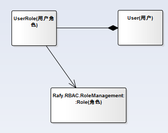

Rafy基于角色的访问权限控制,主要包含四个插件，角色插件（Rafy.RBAC.RoleManagement）、用户角色插件（Rafy.RBAC.UserRoleManagement）、组织插件（Rafy.RBAC.GroupManagement）、数据权限插件（Rafy.RBAC.DataPermissionManagement）。其中角色插件是底层插件，其它三个插件都依赖角色插件，如下图。四个插件可以组合也可以独立使用，用户根据自己的实际场景自行下载相应的插件。
用户可以通过 Nuget Package Manager 搜索rafy.rbac并选择安装相应的插件。
领域关系图如下： 该插件主要包含角色和资源，每个资源包含多个功能操作，功能操作和角色进行关联。通过角色来控制功能权限。当系统只需要角色及功能权限时，可以选择此插件。 领域关系图如下： 领域关系图如下： 领域关系图如下： 在 DomainApp 中添加需要的插件：
权限管理技术，一般使用基于角色访问控制技术RBAC（Role Based Access Control）。该技术被广泛运用于各个系统，非常容易掌握。该技术模型如下图示：


角色插件（Rafy.RBAC.RoleManagement）

用户角色插件（Rafy.RBAC.UserRoleManagement）

该插件依赖账户插件（Rafy.Accounts）,和角色插件（Rafy.RBAC.RoleManagement），主要包含用户和角色的关系，一个用户可以有多个角色。如果系统启用用户和角色关联可以采用此插件。组织插件（Rafy.RBAC.GroupManagement）

该插件依赖账户插件（Rafy.Accounts）,和角色插件（Rafy.RBAC.RoleManagement），主要包含组织，组织和角色关系，组织和用户关系，一个组织可以包含多个用户，同时也可以有多个角色。当系统有组织模型时，可以选择此插件。数据权限插件（Rafy.RBAC.DataPermissionManagement）

该插件依赖角色插件（Rafy.RBAC.RoleManagement），主要是对某个资源进行数据过滤。数据过滤类型提供两种。一种是基于用户进行过滤，一种是基于组织（及其下级组织）进行过滤。同时支持扩展，需要自己实现DataPermissionConstraintBuilder类。当系统提供数据权限时可以选择此插件。插件使用
class JXCApp : DomainApp
{
protected override void InitEnvironment()
{
//添加RBAC插件到 Rafy 应用程序集中。
RafyEnvironment.DomainPlugins.Add(new AccountsPlugin());
RafyEnvironment.DomainPlugins.Add(new RoleManagementPlugin());
RafyEnvironment.DomainPlugins.Add(new GroupManagementPlugin());
RafyEnvironment.DomainPlugins.Add(new UserRoleManagementPlugin());
RafyEnvironment.DomainPlugins.Add(new DataPermissionManagementPlugin());
base.InitEnvironment();
}
}